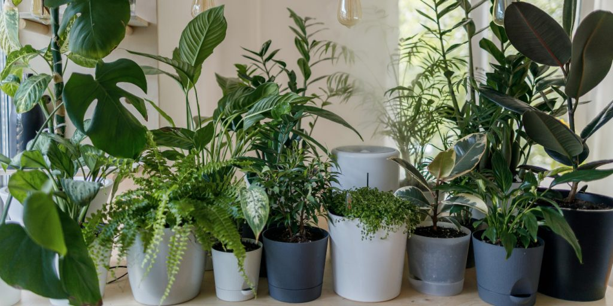
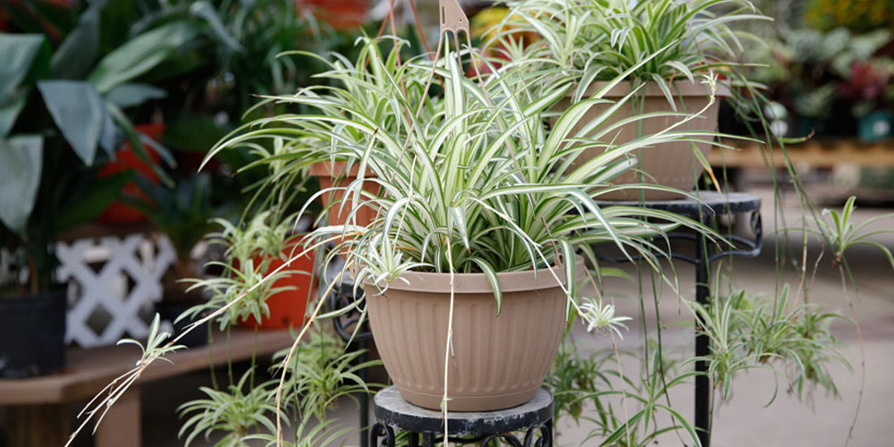
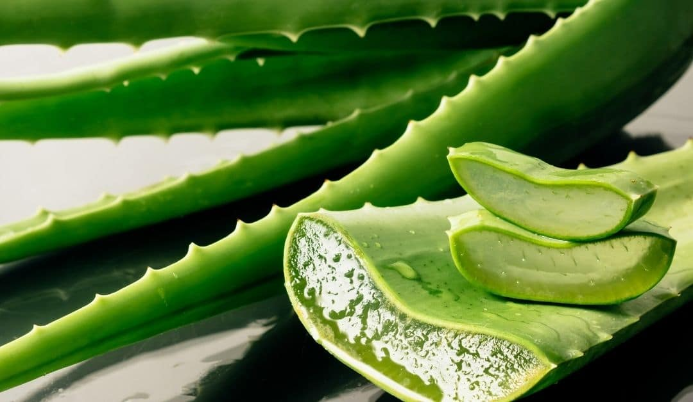

Jenis Tumbuhan

Tumbuhan hijau adalah suatu jenis tumbuhan yang memiliki klorofil. Klorofil berasal dari dua kata, yaitu kloro dan fill. Kloro berarti hijau dan fill berarti daun. Jadi klorofil adalah hijau daun.Makhluk hidup sangat bergantung pada tumbuhan hijau. Hal tersebut disebabkan tumbuhan hijau sebagai sumber makanan bagi manusia, tumbuhan hijau sebagai sumber makanan bagi hewan, dan tumbuhan hijau sebagai sumber energi bagi makhluk hidup.
Tumbuhan biasanya dikenal sebagai makhluk hidup yang dapat hidup sendiri. manusia biasa mengenal dua macam tumbuhan yang bertama tumbuhan berjenis Tanaman Hias dan yang kedua Tanaman Obat, atau bahkan keduanya bisa menjadi satu jenis Tumbuhan. Satu tumbuhan bisa menjadi tanaman hias sekaligus tanaman obat.
Tanaman Hias

Tanaman hias adalah segala jenis tanaman yang fungsinya untuk mempertegas keindahan keindahan. Tumbuhan ini dapat mencakup semua jenis tanaman, mulai dari tanaman merambat, semak, hingga pohon.Dalam dunia arsitektur lansekap, bentuk tanaman hias merupakan aspek yang sangat penting untuk memegang peranan penting dalam ruang.
Ada banyak jenis atau ragam bahan tanaman hias untuk pemeliharaan lingkungan, misalnya di pekarangan rumah atau taman kota. Salah satu pilihan yang dapat dijadikan pedoman dalam memproduksi bahan tanaman hias adalah dengan mengidentifikasi kategori tanaman hias itu sendiri.
Tanaman Obat

Di Indonesia sendiri baru sekitar 200 jenis tumbuhan yang telah dimanfaatkan oleh masyarakat dan industri. Pemanfaatan berbagai tumbuhan dalam pengobatan tradisional sudah umum dikenal di masyarakat luas sebagai obat herbal.
Tanaman dengan khasiat obat ini umumnya sudah dikenal masyarakat luas dan tidak sulit ditemukan oleh siapapun. Karena orang sudah terbiasa menanam tanaman yang berbeda yang dikatakan memiliki khasiat untuk mengobati berbagai penyakit.
Macam Tanaman Hias dan Tanaman Obat
Tanaman hias sekaligus tanaman obat ini berarti setiap tanaman yang memiliki rupa dan bentuk yang bagus juga berfungsi sebagai obat bagi masyarakat. Ada beberapa tanaman seperti ini yang diketahui oleh banyak orang. kita akan mencoba mengenali jenis-jenis tanaman obat yang biasa ditemukan di sekitar rumah dan mengetahui khasiat atau manfaatnya pada pengobatan tradisional.
Spider Plant

Tanaman Laba-Laba adalah salah satu tanaman hias terbaik bagi mereka yang secara inheren buruk dalam merawat tanaman. Dengan variasi yang berbeda termasuk hijau murni, variasi di bagian luar dan di dalam, tanaman laba-laba dapat disiram dari bawah atau atas setiap dua minggu sekali dan akan tumbuh di bawah kondisi pencahayaan apa pun dari jendela terkecil hingga paparan langsung ke terik matahari.
Lidah Buaya

Lidah Buaya atau yang lebih dikenal Lidah Buaya sering dijumpai sebagai tanaman hias. Padahal, lidah buaya memiliki khasiat obat, apalagi banyak digunakan oleh masyarakat sebagai penyembuh luka, meningkatkan kesehatan pencernaan, mendukung kesehatan mulut, serta mengobati jerawat dan panas dalam.